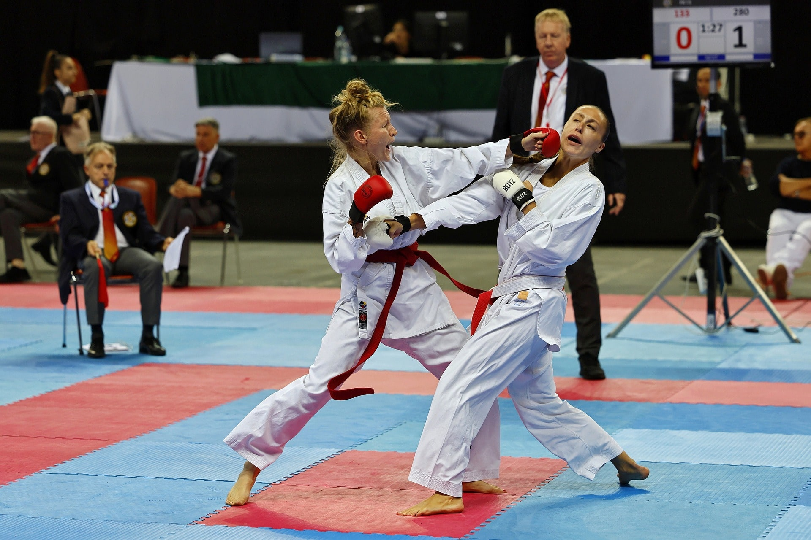
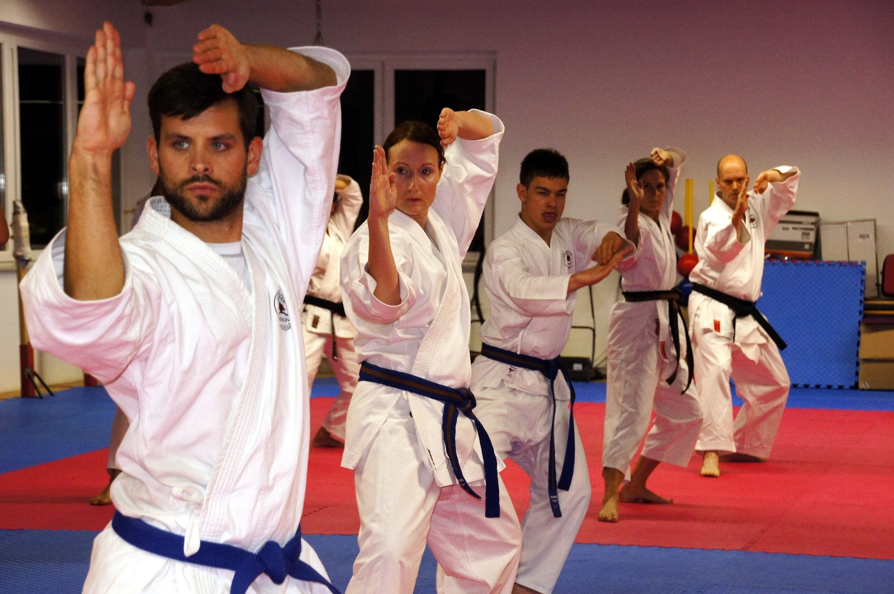

¡Únete a nuestro dojo de karate!
Descubre un nuevo deporte
Somos unos apasionados en diversos tipos de artes marciales
¡No dudes en venir hacer tu clase gratuita de prueba!
Todo sobre el mundo de las artes marciales
¿Quieres comenzar una nueva andanza en el mundo de las artes marciales?¿Quieres aprender un nuevo deporte donde conseguir tanto crecimiento físico como personal? ¿Quieres conocer tecnicas de defensa para sentirte mas seguro/a?Aprovecha para conocernos un poco más
Competición
Texto de intro
Entrenamiento
Texto de intro
Estilos destacados
Informate y encuentra tu estilo

Autodefensa personal
Conoce técnicas para poder defenderte ante cualquier intento de agresión.
Judo
Sistema de combate sin armas, de origen japonés, hoy principalmente practicado como deporte, en que dos contendientes luchan cuerpo a cuerpo con el objetivo de derribar e inmovilizar en el suelo al adversario aprovechando la fuerza y el impulso de este.
Aikido
Sistema de combate de origen japonés que se utiliza para la defensa personal; está basado en otras artes marciales pero se caracteriza por que los combates se desarrollan con una armoniosa técnica parecida a la danza.